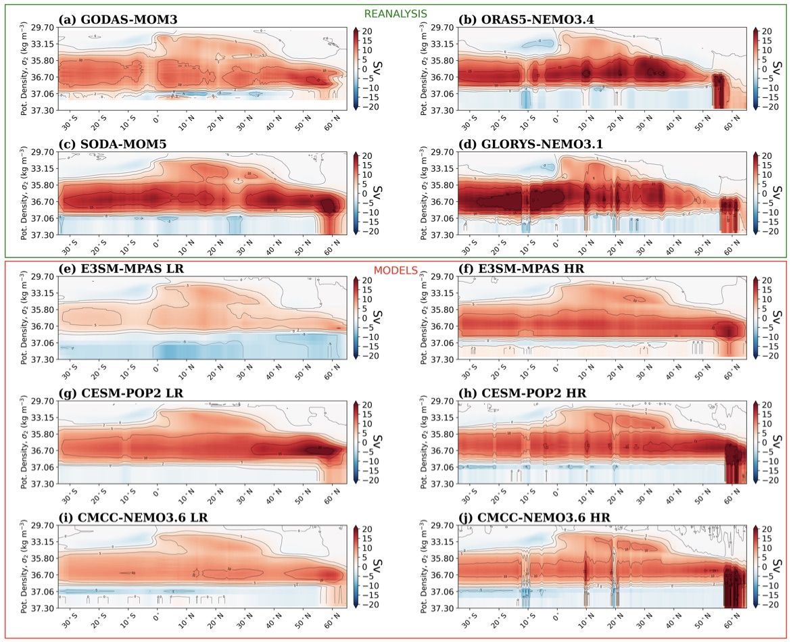
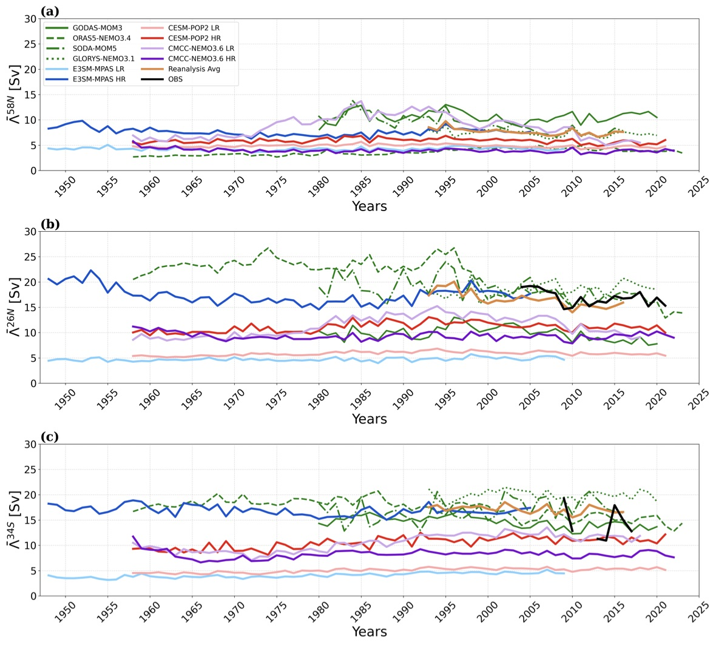
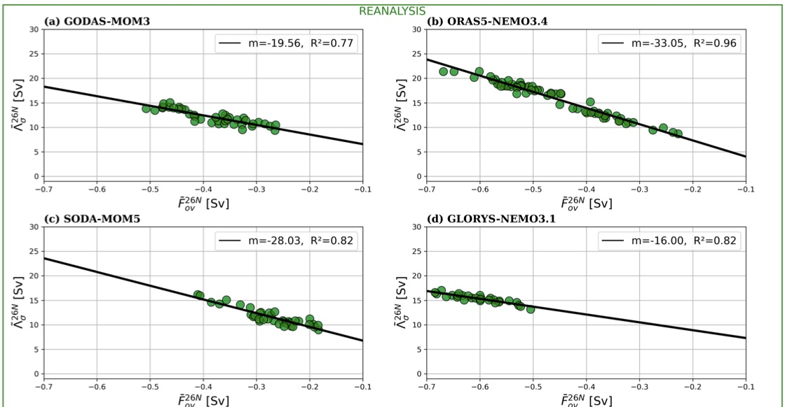
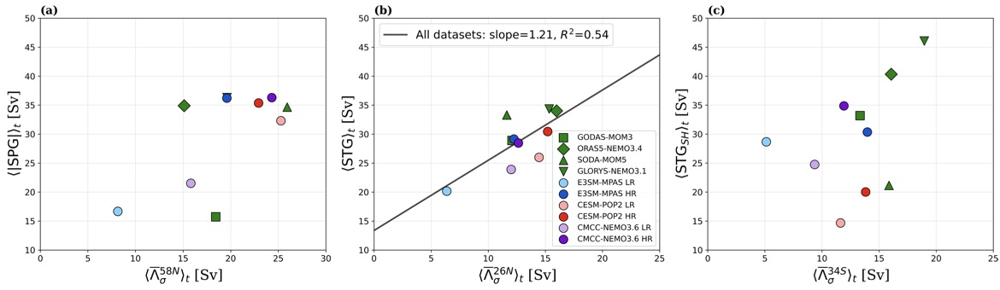
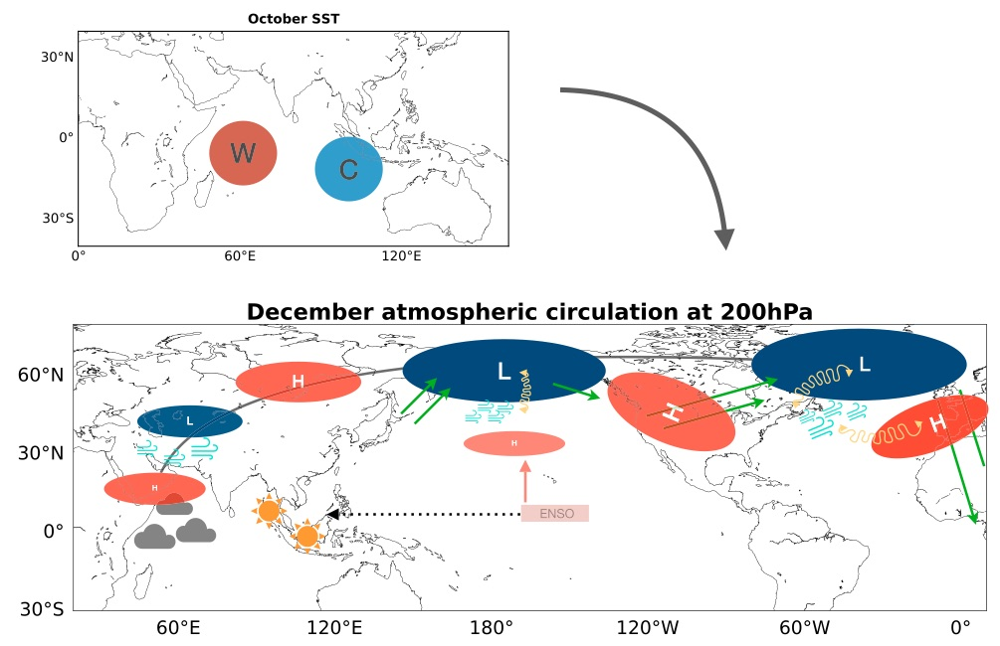
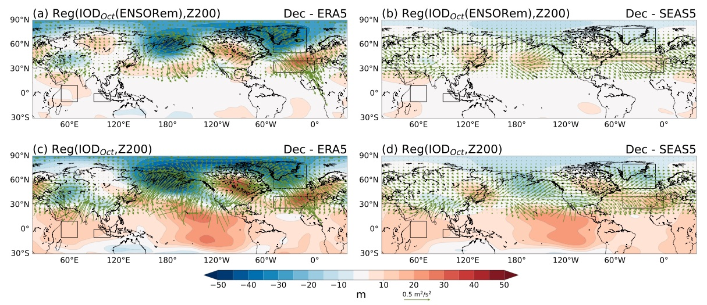
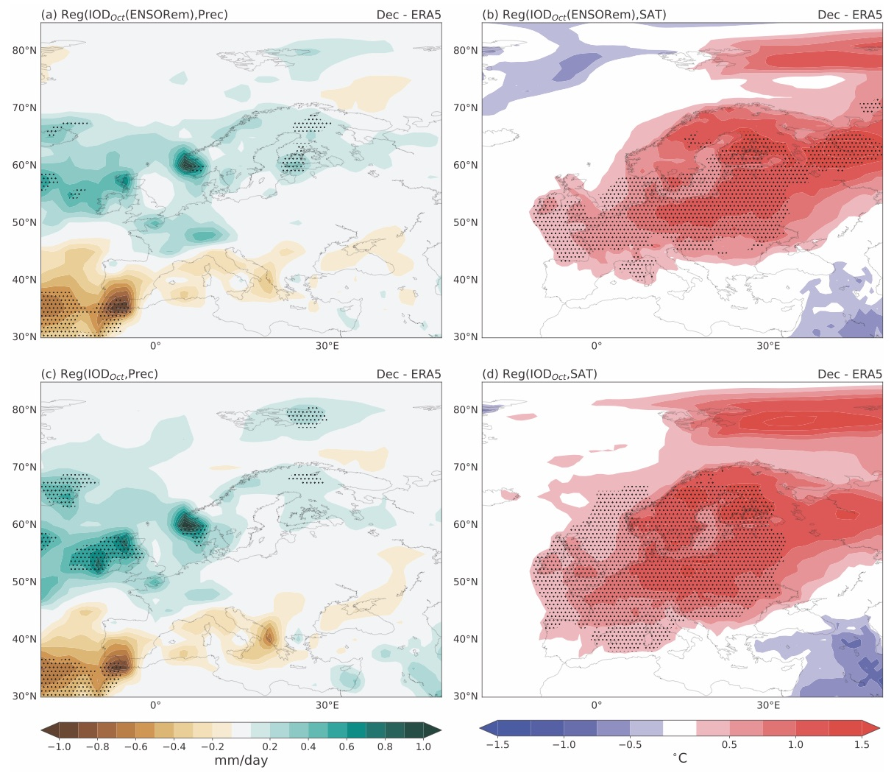

Atlantic Meridional Overturning CirculationGeorgia Tech, with Los Alamos National Laboratory
Why models and reanalyses disagree about the AMOC
Related: Raganato et al. (2026), Journal of Climate.
School of Earth and Atmospheric Sciences, Georgia Institute of Technology
Ph.D. Candidate
Alessandro RaganatoOffice 3166, Ford Building
School of Earth and Atmospheric Sciences
Georgia Institute of Technology
Atlanta, GA
araganato3@gatech.edu
Google Scholar
ORCID
GitHub
Curriculum Vitae (PDF)
I am a Ph.D. candidate in Physics and Ocean Science at the Georgia Institute of Technology, advised by Professor Annalisa Bracco in the School of Earth and Atmospheric Sciences.
My research sits at the intersection of climate dynamics and the physics of complex systems. I study the variability of the ocean, with particular attention to the Atlantic Meridional Overturning Circulation, and develop data-driven methods to evaluate how faithfully climate models reproduce it and its future projections. My work draws on dimensionality reduction, manifold learning and information theory, applied to reanalyses and climate models. I collaborate with Los Alamos National Laboratory through the DOE-supported ImPACTS SciDAC project.
Before Georgia Tech, I was a scientific consultant in the Earth System Physics Section of the International Centre for Theoretical Physics in Trieste, where I studied the atmospheric teleconnections between the Indian Ocean Dipole, ENSO and the North Atlantic climate. I received my M.Sc. in Physics cum laude from the University of Trieste.
Outside research, I am a big Dave Matthews Band fan, and in my free time I enjoy watching movies and reading. My three favorite books, in no particular order, are One Hundred Years of Solitude, Anna Karenina and The Count of Monte Cristo.
Related: Raganato et al. (2026), Journal of Climate.
Building on the manifold-learning framework of Falasca et al. (2022), I apply dimensionality reduction, mutual information and time-series analysis to identify structure and dependencies in high-dimensional climate fields. The aim is to measure where a model’s dynamics depart from the observed system, rather than comparing mean states alone.
Related: Raganato et al. (2025), Journal of Climate; Reale et al. (2025), Geophysical Research Letters.
Georgia Tech, with Los Alamos National Laboratory
Raganato, A., Bracco, A., Van Roekel, L., & Iovino, D. (2026). AMOC Discrepancies across Reanalyses and Models Limit Dynamical Understanding. Journal of Climate, 39(19), 5695–5716. DOI
The Atlantic Meridional Overturning Circulation (AMOC) carries warm, salty surface water northward and returns cold, dense water southward at depth. It shapes rainfall, temperature and extreme events around the Atlantic, and climate models project that it will weaken this century. How much it will weaken, and whether it could cross a tipping point, remains highly uncertain.
Part of the problem is that direct observations are short. The RAPID array at 26°N has run for about two decades, the SAMBA array at 34°S covered only 2009–2017, and OSNAP in the subpolar North Atlantic began in 2014. Ocean reanalyses and forced ocean models are therefore used to fill the gaps. We asked whether these products agree with one another on the AMOC and on the processes thought to control its stability.
We compared ten datasets covering the past 50–70 years:
At three key latitudes (58°N in the subpolar North Atlantic, 26°N at the RAPID array and 34°S in the South Atlantic) we computed:

Not really. All datasets reproduce the broad structure of the overturning cell, but they differ widely in its strength and in how it evolves over time. Among the reanalyses, the higher-resolution products show stronger overturning, but they also differ in atmospheric forcing, model and assimilation scheme, so resolution alone cannot explain the spread. Among the models, two of the three pairs produce a stronger AMOC at higher resolution, while the third is barely sensitive to it.

At 26°N, the reanalysis average matches the RAPID observations well, with SODA and GLORYS closest, while GODAS underestimates them by 5–8 Sv. All models except the high-resolution E3SM run simulate an AMOC weaker than observed, with mean strengths between 5 and 15 Sv. Agreement improves considerably when the AMOC is measured in density coordinates rather than depth.


Large discrepancies affect not only ocean models but also the reanalyses, which are often treated as the reference. Before the AMOC's future can be projected with confidence, models need to represent salinity transport and gyre dynamics correctly, and the diverging behaviour in the South Atlantic must be understood. The North Atlantic subtropical gyre stands out as a consistent indicator of mean overturning strength across modelling strategies. Sustained observations, especially in the South Atlantic, are essential to constrain both models and reanalyses.
This work is supported by the U.S. Department of Energy through the ImPACTS SciDAC project, in collaboration with Los Alamos National Laboratory.
International Centre for Theoretical Physics, Trieste
Raganato, A., Abid, M. A., & Kucharski, F. (2025). The combined link of the Indian Ocean Dipole and ENSO with the North Atlantic–European circulation during early boreal winter in reanalysis and the ECMWF SEAS5 hindcast. Journal of Climate, 38(2), 445–460. DOI
ENSO is the main source of seasonal predictability outside the tropics, and in late winter (February–March) a warm ENSO event is typically followed by a negative North Atlantic Oscillation (NAO). In early winter the picture changes: the North Atlantic–European circulation often shows a positive NAO-like pattern, carried by Rossby waves that start not in the Pacific but over the Indian Ocean. The Indian Ocean Dipole (IOD), an east–west sea surface temperature (SST) pattern that peaks in autumn, is partly driven by ENSO but can also develop on its own.
We asked how much of this early-winter signal belongs to the IOD itself, which physical mechanisms carry it from the tropics to Europe, and why seasonal forecast systems reproduce it only weakly.
We compared the ERA5 reanalysis with the ECMWF SEAS5 seasonal reforecasts (25 ensemble members initialized on 1 October) over 1981–2019. Using partial linear regression, we related October SST indices to the December circulation, rainfall and temperature, and linearly removed ENSO from the IOD index to isolate the Indian Ocean contribution. A composite of ENSO-neutral years confirmed that the result is not an artefact of the regression. To diagnose the mechanism we used:

A positive IOD in October (warm west, cool east) leaves a rainfall response that persists until December: wetter conditions over the western Indian Ocean and drier conditions in the east. This heating dipole perturbs the circulation over South Asia and launches an upper-level wavenumber-3 Rossby wave. The wave travels north-eastward along the circumglobal waveguide, across Asia, the North Pacific and North America, and reaches the North Atlantic, where it projects onto a positive NAO. Over the North Pacific and North Atlantic the wave is reinforced by a positive feedback from transient eddies, the synoptic storms that feed momentum back into the large-scale flow.


SEAS5 captures the right structure and sign, a wave train ending in a positive NAO, but with much smaller amplitude. Its IOD–NAO correlation is about half of that in ERA5. We traced the deficit to two causes:
Improving how forecast systems represent Indian Ocean rainfall and the storm-track feedback could therefore improve early-winter predictions for Europe.
As a co-author, I contributed to a follow-up study led by M. Reale that extends this teleconnection to precipitation extremes and storm tracks over the North Atlantic, Europe and the Mediterranean (ERA5, 1979–2024). It confirms the December positive NAO-like response to the IOD and shows that a positive IOD brings more frequent, intense and long-lasting rain events at 50°–60°N, and fewer cyclones over the eastern Atlantic and western Mediterranean. These storm changes follow changes in baroclinicity, driven by a stronger north–south temperature gradient and vertical wind shear.
Reale, M., Raganato, A., D'Andrea, F., Abid, M. A., Hochman, A., Chowdhury, N. R., Salon, S., & Kucharski, F. (2025). Geophysical Research Letters, 52, e2025GL116732. DOI
A complete and current list is available on Google Scholar.
Updated September 2026
Georgia Institute of Technology
Prepared in-class activities and course assessments for groups of 15–25 undergraduate students, and graded student work to keep the class on track with the material.
I welcome inquiries about research collaborations and opportunities.
School of Earth and Atmospheric Sciences
Georgia Institute of Technology
Atlanta, GA 30332, USA
Office 3166, Ford Building
Georgia Institute of Technology
Atlanta, GA